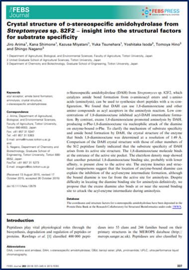
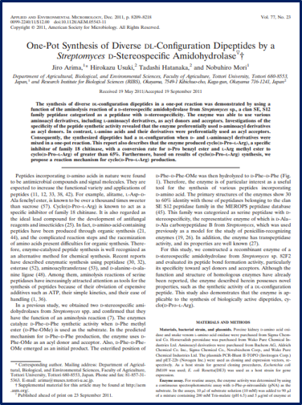

お気に入り論文
-
アセチル化を自由自在に出来る酵素が誕生！？
Enzyme and Microbial Technology, 165:110208(2023. 4)
-
まさかの論文賞！！ガラスに積極的に引っ付くタンパク質はガラスも作る？
Journal of Bioscience and Bioengineering, 134(6):477-483(2022. 12)
-
やっとキチンをめちゃ分解する細菌をゲット！
FEMS Microbiology Letters, fnaa055(2020.4
-

DL配列のジペプチドの合成に特価した酵素の構造って？
FEBS Journal, 283, 337-349(2016. 1)
-

DL配列のジペプチドの合成に特価した酵素って不思議！
Applied and Environmental Microbiology, 77, 8209-8218(2011. 9)
-
カルノシンを酵素で合成！
Journal of Biotechnology, 147, 52-58 (2010. 4)
研究業績
論文
72. H. Inoue, T. Tachibana, T. Bito, J. Arima: Acetylation of amines and alcohols catalyzed by acetylcholinesterase from Pseudomonas aeruginosa PAO1. Enzyme and Microbial Technology, 165:110208. doi: 10.1016/j.enzmictec.2023.110208. 2023. 4
71. A. Yamamoto, M. Seki, K. Koseki, Y. Yabuta, K. Shimizu, J. Arima, F. Watanabe, T. Bito: Production and characterization of cyanocobalamin-enriched tomato (Solanum lycopersicum) fruits grown in hydroponics. Journal of the Science of Food and Agriculture, doi: 10.1002/jsfa.12297. 2022. 11
70. J. Arima, Y. Sakate, K. Monden, H. Kobayashi, M. Nishi, K. Shimizu: Silica adsorption tag derived from the silica polycondensation protein glassin for the immobilization of soluble proteins. Journal of Bioscience and Bioengineering, 134(6):477-483, doi: 10.1016/j.jbiosc.2022.09.001. 2022. 12
69. SA. Eltigani, MM. Eltayeb, J. Arima, T. Taniguchi, A. Ishihara: Chemicals behind the use of Strombus tricornis opercula in traditional sudanese perfumery and medicine. Journal of Bioscience and Bioengineering, 133, 396-403, doi: 10.1016/j.jbiosc.2021.12.016. 2022. 4
68. SA. Eltigani, MM. Eltayeb, T. Bito, T. Ichiyanagi, A. Ishihara, J. Arima: Argeloside I inhibits the pathogenicity of Porphyromonas gingivalis TDC60. Journal of Bioscience and Bioengineering,130, 644-649, doi: 10.1016/j.jbiosc.2020.07.016. 2020. 7
67. M. Nishi, Y. Sakate, T. Bito, J. Arima, K. Shimizu: Identification of the domains involved in promotion of silica formation in glassin, a protein occluded in hexactinellid sponge biosilica, for development of a tag for purification and immobilization of recombinant proteins. Marine Biotechnology, 22, 739-747, doi.org/10.1007/s10126-020-09967-2 2020. 4
66. D. Niki, A. Higashitani, H. Osada, T. Bito, K. Shimizu, J. Arima: Chitinolytic proteins secreted by Cellulosimicrobium sp. NTK2. FEMS Microbiology Letters, fnaa055, doi: 10.1093/femsle/fnaa055. 2020. 4
65. SA. Eltigani, MM. Eltayeb, T. Bito, A. Ishihara, J. Arima: Non-specific inhibitor from Origanum vulgare leaves restrains Porphyromonas gingivalis growth and virulence factors. International Journal of Agriculture and Biology (IF=0.822), 23, 1068-1074 2020. 4
64. T. Bito, N. Okamoto, K. Otsuka, Y. Yabuta, J. Arima, T. Kawano, F. Watanabe: Involvement of spermidine in the reduced lifespan of Caenorhabditis elegans during vitamin B12 deficiency. Metabolites, 19, 192, doi: 10.3390/metabo9090192. 2019. 9
63. SA. Eltigani, MM. Eltayeb, A. Ishihara, J. Arima: Isolates from Monechma ciliatum seeds’ extract hampered Porphyromonas gingivalis hemagglutinins. Journal of Food Biochemistry, 43, e13029 2019. 8
62. YYA. Elyas, K. Miyatani, K. Shimizu, J. Arima: Effect of active site pocket structure modification of D-stereospecific amidohydrolase on the recognition of stereospecific and hydrophobic substrates. Molecular Biotechnology, 60(9), 690-697 2018. 9
61. YY. Elyas, K. Miyatani, T. Bito, M. Uraji, T. Hatanaka, K. Shimizu, J. Arima: Active site pocket of Streptomyces D-stereospecific amidohydrolase has functional roles in aminolysis activity. Journal of Bioscience and Bioengineering, 126(3), 293-300 2018. 9
60. S. Tokai, T. Bito, K. Shimizu, J. Arima: Methionine residues lining the substrate pathway in prolyl oligopeptidase from Pleurotus eryngii play an important role in substrate recognition. Bioscience Biotechnology and Biochemistry, 82(7), 1107-1115 2018. 7
59. M. Uraji, H. Tamura, E. Mizohata, J. Arima, K. Wan, K. Ogawa, T. Inoue, T. Hatanaka: Loop of Streptomyces feruloyl esterase plays an important role in the enzyme’s catalyzing the release of ferulic acid from biomass. Applied and Environmental Microbiology, 84(3) pii: e02300-17. doi: 10.1128/AEM.02300-17. 2018. 1
58. S. Tokai, T. Bito, K. Shimizu and J. Arima: Effect of oxidation of the non-catalytic β-propeller domain on the substrate specificity of prolyl oligopeptidase from Pleurotus eryngii. Biochemical and Biophysical Research Communications, 487(2), 356-361 2017. 5
57. IA. Mohamed Ahmed, MM. Eltayeb, MEE. Habora, AE. Eltayeb, J. Arima, N. Mori, T. Taniguchi and N. Yamanaka: Identification of the key genes involved in the degradation of homocholine by Pseudomonas sp. Strain A9 by using suppression subtractive hybridization. Process Biochemistry, 52, 94-105 2017. 1
56. H. Fujimitsu, Y. Taniyama, S. Tajima, I. A. Mohamed Ahmed, J. Arima and N. Mori: Purification and characterization of 4-N-trimethylamino-1-butanol dehydrogenase from Fusarium merismoides var. acetilereum. Bioscience, Biotechnology, and Biochemistry , 80, 1753-1758 2016. 9
55. H. Fujimitsu, A. Matsumoto, S. Takubo, A. Fukui, K. Okada, I. A. Mohamed Ahmed, J. Arima and N. Mori: Purification, gene cloning and characterization of γ-butyrobetainyl CoA synthetase from Agrobacterium sp. 525a. Bioscience, Biotechnology, and Biochemistry, 80, 1536-1545 2016. 8
54. K. Wan, M. Uraji, J. Arima and T. Hatanaka: Characterization of a novel metallocarboxypeptidase from Streptomyces cinnamoneus TH-2. Bioresources and Bioprocessing, 3(21) doi: 10.1186/s40643-016-0099-3. 2016. 4
53. J. Arima, K. Shimone, K. Miyatani, Y. Tsunehara, Y. Isoda, T. Hino and S. Nagano: Crystal structure of D-stereospecific amidohydrolase from Streptomyces sp. 82F2: insight into the structural factors for substrate specificity. FEBS Journal, 283, 337-349 2016. 1
52. I.A. Mohamed Ahmed, M.E. Eltayeb, N. Mori, J. Arima, H. Tanaka, T. Taniguchi and N. Yamanaka: Proteomic analysis of homocholine catabolic pathway in Pseudomonas sp. strain A9. Process Biochemistry, 50, 1735-1747 2015. 11
51. K. Shimizu, T. Amano, MD.R. Bari, J.C. Weaver, J. Arima and N. Mori: Glassin, a histidine-rich protein from the siliceous skeletal system of the marine sponge Euplectella, directs silica polycondensation. Proceedings of the National Academy of Sciences of the United States of America, 112, 11449-11454 2015. 9
50: Y. Yabuta, Y. Kamei, T. Bito, J. Arima, K. Yoneda, H. Sakuraba, T. Ohshima, Y. Nakano, F. Watanabe: Functional and structural characteristics of methylmalonyl-CoA mutase from Pyrococcus horikoshii. Bioscience, Biotechnology, and Biochemistry, 79, 710-717 2015. 7
49. 渡邊莉奈・有馬二朗・尾谷浩・前川二太郎・岡久美子： シイタケ黒色斑点病菌による宿主特異的褐変誘導物質の生産 日本きのこ学会誌, 22：121-127 2014. 12
48: J. Arima, S. Tokai, M. Chiba, T. Ichiyanagi, Y. Yabuta, N. Mori and T. Aimi: Gene cloning and biochemical characterization of eryngase, a serine aminopeptidase of Pleurotus eryngii belonging to the family S9 peptidases. Bioscience, Biotechnology, and Biochemistry, 78, 1856-1863 2014. 11
47: M. Uraji, J. Arima, Y. Inoue, K. Harazono and T. Hatanaka: Application of two newly identified and characterized feruloyl esterases from Streptomyces sp. In the enzymatic production of ferulic acid from agricultural biomass. PLoS One, 9(8):e104584. doi: 10.1371/journal.pone.0104584. 2014. 8
46: J. Arima, A. Tanaka, M. Morimoto and N. Mori: Mutation of active site serine residue with cysteine displays change in acyl-acceptor preference of β-peptidyl aminopeptidase from Pseudomonas aeruginosa PAO1. Applied Microbiology and Biotechnology, 98, 1631-1640 2014. 2
45: M.M. Eltayeb, J. Arima and N. Mori: Alanine scanning mutation approach for classification of the roles of conserved residues in the activity and substrate affinity of L-carnitine dehydrogenase. Biotechnology Letters, 36, 309-317 2014. 2
44: M.M. Eltayeb, I.A. Mohamed Ahmed, J. Arima and N. Mori: Identification of residues essential for the activity and substrate affinity of L-carnitine dehydrogenase. Molecular Biotechnology, 55, 268-276 2013. 11
43: J. Arima, Y. Isoda, T. Hatanaka and N. Mori: Recombinant production and characterization of an N-acyl-D-amino acid amidohydrolase from Streptomyces sp. 64E6. World Journal of Microbiology and Biotechnology, 29, 899-906 2013. 5
42: MR. Bari, M. Hassan, N. Akai, J. Arima and N. Mori: Gene cloning and biochemical characterization of 4-N-trimethylaminobutyraldehyde dehydrogenase II from Pseudomonas sp. 13CM. World Journal of Microbiology and Biotechnology, 29, 683-692 2013. 4
41: MR. Bari, N. Akai, J. Arima and N. Mori: Evalution of genes encoding 4-N-trimethylaminobutyraldehyde dehydrogenase and 4-N-trimethylamiono-1-butanol dehydrogenase from Pseudomonas sp. 13 CM. International Journal of Agriculture & Biology, 15, 238-244 2013. 3
40: A. Iuchi, S. Haraguchi, W. Mongkolthanaruk, J. Arima, M. Nagase, H.C. Khanh, T. Ichiyanagi, T. Yamaguchi, N. Shimomura and T. Aimi: Characterization of novel amylase from amylolytic lactic acid bacteria Pediococcus ethanolidurans isolated from Japanese pickles (Nuka-zuke). Food Science and Technology Research, 18, 861-867 2012. 12
39. T. Hatanaka, Y. Inoue, J. Arima, Y. Kumagai, H. Usuki, K. Kawakami, M. Kimura and T. Mukaihara: Production of dipeptidyl peptidase IV 1 inhibitory peptides from defatted rice bran. Food Chemistry, 134, 797-802 2012. 9
38. J. Arima, M. Kono, M. Kita and N. Mori: A mutant Streptomyces leucine aminopeptidase with enhanced L-aspartyl L-amino acid methyl ester synthetic activity. Biotechnology Letters, 34, 1093-1099 2012. 6
37. T. Utsumi§, J. Arima§, C. Sakaguchi, T. Tamura, C. Sasaki, H. Kusakabe, S. Sugio, K. Inagaki:Arg305 of Streptomyces L-glutamate oxidase plays a crucial role for substrate recognition. Biochemical and Biophysical Research Communications, 417, 951-955 2012. 2
36. J. Arima, H. Usuki, T. Hatanaka and N. Mori:One-pot synthesis of diverse dipeptides of DL-configuration by Streptomyces D-stereospecific amidohydrolase. Applied and Environmental Microbiology, 77, 8209-8218 2011. 9
35. Y. Uesugi, H. Usuki, J. Arima, M. Iwabuchi and T. Hatanaka:Molecular dissection of Streptomyces trypsin on substrate recognition. Biochimica et Biophysica Acta-Proteins and Proteomics, 1814, 1295-1304 2011. 8
34. J. Arima, H. Ito, T. Hatanaka and N. Mori:Aminolytic reaction catalyzed by D-stereospecific amidohydrolases from Streptomyces spp. Biochimie, 93, 1460-1469 2011. 7
33. Y. Kumagai, H. Usuki, Y. Yamamoto, A. Yamasato, J. Arima, T. Mukaihara and T. Hatanaka:Characterization of calcium ion sensitive region for beta-mannanase from Streptomyces thermolilacinus: Biochimica et Biophysica Acta-Proteins and Proteomics, 1814, 1127-1133 2011. 6
32. T. Hatanaka, A. Yamasato, J. Arima, H. Usuki, Y. Yamamoto, Y. Kumagai and T. Mukaihara:Extracellular production and characterization of Streptomyces X-prolyl dipeptidyl aminopeptidase. Applied Biochemistry and Biotechnology,, 164, 475-486 2011. 6
31. H. Usuki, Y. Yamamoto, J. Arima, M. Iwabuchi, S. Miyoshi and T. Hatanaka:Peptide bond formation by aminolysin-A catalysis:a simple approach to enzymatic synthesis of diverse short oligopeptides and biologically active puromycins. Organic & Biomolecular Chemistry,, 9, 2327-2335 2011. 4
30. T. Hatanaka, H. Usuki, Y. Uesugi, J. Arima, Y. Yamamoto and M. Iwabuchi:Extracellular production and characterization of two Streptomyces L-asparaginases. Applied Biochemistry and Biotechnology, 163, 836-844 2011. 2
29. J. Arima, M. Chiba, T. Ichiyanagi, Y. Yabuta, N. Mori and T. Aimi:Eryngase: a Pleurotus eryngii aminopeptidase exhibiting peptide bond formation activity. Applied Microbiology and Biotechnology, 87,1791-1801 2010. 8
28. I.A. Mohamed Ahmed, J. Arima, T. Ichiyanagi, E. Sakuno and N. Mori:Isolation and characterization of homocholine-degrading Pseudomonas sp. strains A9 and B9b. World Journal of Microbiol Biotechnology, 26, 1455-1464 2010. 8
27. J. Arima, A. Uesumi, H. Mitsuzumi and N. Mori:Biochemical characterization of L-carnitine dehydrogenases from Rhizobium sp. and Xanthomonas translucens. Bioscience, Biotechnology, and Biochemistry, 74, 1237-1242 2010. 6
26. J. Arima, M. Morimoto, H. Usuki, N. Mori and T. Hatanaka:Aminolysis reaction of Streptomyces S9 aminopeptidase promotes the synthesis of diverse prolyl dipeptides. Applied and Environmental Microbiology, 76, 4109-4112 2010. 6
25. J. Arima, M. Morimoto, H. Usuki, N. Mori and T. Hatanaka: β-Alanyl peptide synthesis by Streptomyces S9 aminopeptidase. Journal of Biotechnology, 147, 52-58 2010. 4
24. H. Usuki, Y. Uesugi, J. Arima, M. wabuchi and T. Hatanaka: Engineered transaminopeptidase, aminolysin-S for catalysis of peptide bond formation to give linear and cyclic dipeptides by one-pot reaction. Chemical Communications, 46, 580-582 2010. 1
23. J. Arima§, C. Sasaki§, C. Sakaguchi, H. Mizuno, T. Tamura, A. Kashima, H. Kusakabe, S. Sugio and K. Inagaki: Structural characterization of L-glutamate oxidase from Streptomyces sp. X-119-6. FEBS Journal, 276, 3894-3903 2009. 7
22. I.A. Mohamed Ahmed, J. Arima, T. Ichiyanagi, E. Sakuno and N. Mori: Isolation and characterization of 3-N-trimethylamino-1-propanol degrading Arthrobacter sp. strain E25. Research Journal of Microbiology, 4, 49-58 2009. 6
21. I.A. Mohamed Ahmed, J. Arima, T. Ichiyanagi, E. Sakuno and N. Mori: Isolation and characterization of 3-N-trimethylamino-1-propanol degrading Rhodococcus sp. strain A2. FEMS Microbiology Letters, 296, 219-225 2009. 6
20. J. Arima, Y. Uesugi and T. Hatanaka: Bacillus D-stereospecific metallo-amidohydrolase: Active-site metal-ion substitution changes substrate specificity. Biochimie, 91, 568-576 2009. 4
19. T. Hatanaka, Y. Uesugi, J. Arima, H. Usuki and M. Iwabuchi: Biochemical characterization of a novel metalloendopeptidase from Streptomyces aureofaciens TH-3 with post-proline hydrolysis activity. Enzyme and Microbial Technology, 44, 295-301 2009. 3
18. T. Hatanaka, H. Onaka, J. Arima, M. Uraji, Y. Uesugi, H. Usuki, Y. Nishimoto and M. Iwabuchi: pTONA5: A hyperexpression vector in streptomycetes. Protein Expression and Purification, 62, 244-248 2008. 9
17. Y. Uesugi, J. Arima, H. Usuki, M. Iwabuchi and T. Hatanaka: Two bacterial collagenolytic serine proteases have different topological specificities. Biochimica et Biophysica Acta-Proteins and Proteomics, 1784:716-726 2008. 4
16. J. Arima, Y. Uesugi, M. Iwabuchi and T. Hatanaka: Streptomyces aminopeptidase P: biochemical characterization and insight into the roles of its N-terminal domain. Protein Engineering, Design & Selection, 21:45-53 2008. 1
15. M. Uraji, J. Arima, Y. Uesugi, M. Iwabuchi and T. Hatanaka: Effect of salt on the activity of Streptomyces prolyl aminopeptidase. Biochimica et Biophysica Acta-Proteins and Proteomics, 1774:1462-1469 2007. 11
14. Y. Uesugi, J. Arima, M. Iwabuchi and T. Hatanaka: Sensor of phospholipids in Streptomyces phospholipase D. FEBS Journal, 274:2672-2681 2007. 5
13. Y. Uesugi, J. Arima, M. Iwabuchi and T. Hatanaka: C-terminal loop of Streptomyces phospholipase D has multiple functional roles. Protein Science, 16:197-207 2007. 2
12. T. Hatanaka, J. Arima, M. Uraji, Y. Uesugi and M. Iwabuchi: Characterization, cloning, sequencing and expression of a novel aminopeptidase N from Streptomyces sp. TH-4. Applied Microbiology and Biotechnology, 74:347-356 2007. 2
11. J. Arima, Y. Uesugi, M. Iwabuchi and T. Hatanaka: Change in substrate preference of Streptomyces aminopeptidase by modifying environment around substrate binding site. Applied and Environmental Microbiology, 72:7962-7967 2006
10. J. Arima, Y. Uesugi, M. Uraji, M. Iwabuchi and T. Hatanaka: Dipeptide synthesis by leucine aminopeptidase from Streptomyces septatus TH-2 and its application to synthesis of biologically active peptides. Applied and Environmental Microbiology, 72:4225-4231 2006
9. S. Upadhyay, N. Ohgami, H. Kusakabe, H. Mizuno, J. Arima, T. Tamura, K. Inagaki and H. Suzuki: Performance characterization of recombinant L-glutamate oxidase in a micro GOT/GPT sensing system. Sensors and Actuators B-Chemical, 119:570-576 2006
8. J. Arima, Y. Uesugi, M. Uraji, S. Yatsushiro, S. Tsuboi, M. Iwabuchi and T. Hatanaka: Modulation of Streptomyces leucine aminopeptidase by calcium: Identification and functional analysis of key residues in activation and stabilization by calcium. Journal of Biological Chemistry, 281:5885-5894 2006
7. J. Arima, Y. Uesugi, M. Uraji, M. Iwabuchi and T. Hatanaka: The role of Glu196 in the environment around the substrate binding site of leucine aminopeptidase from Streptomyces griseus. FEBS Letters, 580:912-917 2006
6. J. Arima, Y. Uesugi, M. Iwabuchi and T. Hatanaka: Study on peptide hydrolysis by aminopeptidases from Streptomyces griseus, Streptomyces septatus, and Aeromonas proteolytica. Applied Microbiology and Biotechnology, 70:541-547. 2006
5. J. Arima, Y. Uesugi, M. Iwabuchi and T. Hatanaka: Alteration of leucine aminopeptidase from Streptomyces septatus TH-2 to phenylalanine aminopeptidase by site-directed mutagenesis. Applied and Environmental Microbiology, 71:7229-7235 2005
4. Y. Uesugi, K. Mori, J. Arima, M. Iwabuchi and T. Hatanaka: Recognition of phospholipids in Streptomyces phospholipase D. Journal of Biological Chemistry, 280:26143-2615 2005
3. T. Hatanaka, J. Arima, Y. Uesugi and M. Iwabuchi: Purification, characterization, cloning and sequencing of metalloendopeptidase form Streptomyces septatus TH-2. Archives of Biochemistry and Biophysics, 434:289-298 2005
2. J. Arima, M. Iwabuchi and T. Hatanaka: Gene cloning and overproduction of an aminopeptidase from Streptomyces septatus TH-2, and comparison with a calcium-activated enzyme from Streptomyces griseus. Biochemical and Biophysical Research Communications, 317:531-538 2004
1. J. Arima, T. Tamura, H. Kusakabe, M. Ashiuchi, T. Yagi, H. Tanaka and K. Inagaki: Recombinant expression, biochemical characterization and stabilization through proteolysis of an L-glutamate oxidase from Streptomyces sp. X-119-6. Journal of Biochemistry, 134:805-812 003
著書・総説／評論・紀要・授賞等
著書
K. Shimizu, H. Kobayashi, M. Nishi, M. Tsukahara, T.Bito, J. Arima:Biomineralization, ISBN: 978-981-13-1001-0, Exploration of genesaassociated with sponge silicon biomineralization in the whole genome sequence of hexactinellid Euplectella curvistelata. Pp.147-153, K.Endo, T.Kogure, H.Nagasawa, Springer, Singapore 2018. 8
有馬二朗:菌類きのこ遺伝資源―発掘と活用―, ISBN978-4-86345-156-8，第3章3節きのこに潜む新たな酵素の利用，pp．63-71，GCOE「持続性社会構築に向けた菌類きのこ資源活用」偏執委員会編，丸善プラネット，東京 2013. 1
有馬二朗:食品酵素化学の最新技術と応用II, ISBN978-4-7813-0483-0, 第12章セリンペプチダーゼ―ペプチド合成への利用展開―，pp. 115-124, 井上國世監修，シーエムシー出版，東京 2011. 12
総説／評論
有馬二朗・稲垣賢二：L-グルタミン酸酸化酵素の基質認識に重要な役割を果たすArg305残基 ビタミン 87：81-82 2013. 2
有馬二朗・稲垣賢二：放線菌由来フラビン酵素L-グルタミン酸酸化酵素のユニークな構造 ビタミン 85：23-24 2011.1
紀要等
K. Shimizu, H. Kobayashi, M. Nishi, M. Tsukahara, T. Bito, J. Arima: Exploration of Genes Associated with Sponge Silicon Biomineralization in the Whole Genome Sequence of the Hexactinellid Euplectella curvistellata. Biomineralization (conference paper), 147-153
2018. 10
有馬二朗： アミノペプチダーゼのペプチド合成工学への利用展開 2011年度研究助成金受給者 研究報告集 日揮実吉奨学会 30, 84-87 2013. 3
J. Arima: Molecular evolution of Streptomyces serine peptidase for the synthesis of β-alanyl-histidine. REPORT of NODA INSTITUTE for SCIENTIFIC RESEARCH（野田産業科学研究所 Research Grant平成21年研究年報）53, 49-51 2010. 3
有馬二朗・稲垣賢二： 放線菌L-グルタミン酸オキシダーゼの構造･機能解析及びグルタミン酸センサーへの応用 応用微生物学協議会会誌 4:13-19 2006
J. Arima: Dipeptide synthesis by aminopeptidase from Streptomyces septatus TH-2 and its application to synthesis of biologically active peptides. ANNUAL ROPORT of RIBS Okayama（岡山県生物科学総合研究所 平成18年研究年報） 103-114 2006
J. Arima, Y.Uesugi, M.Iwabuchi and T.Hatanaka: Dipeptide synthesis by bacterial leucine aminopeptidase. Proceedings of 43rd Japanese Peptide Symposium/4th Peptide Engineering Meeting. 61-62 2006
J. Arima: Study on peptide hydrolysis by bacterial leucine aminopeptidase. ANNUAL ROPORT of RIBS Okayama（岡山県生物科学総合研究所 平成17年研究年報） 123-131 2005
J. Arima: Identification and functional analysis of key residues in activation and stabilization of Streptomyces aminopeptidase by calcium. ANNUAL ROPORT of RIBS Okayama（岡山県生物科学総合研究所 平成16年研究年報） 145-159 2005
J. Arima and T. Hatanaka: Gene cloning, recombinant expression and biochemical characterization of an aminopeptidase from Streptomyces septatus TH-2. ANNUAL REPORT of RIBS Okayama（岡山県生物科学総合研究所 平成15年研究年報）167-180 2004
有馬二朗・田村隆・篠原寛明・日下部均・田中英彦・稲垣賢二： L-グルタミン酸オキシダーゼを用いたグルタミン酸センサーの開発及びGOT/GPTセンシングへの応用 岡山大学農学部学術報告 91:15-22 2002
有馬二朗・崎川智代・田村隆・芦内誠・八木年晴・日下部均・田中英彦・稲垣賢二： Streptomyces sp. X-119-6由来L-グルタミン酸オキシダーゼのクローニング及び発現 微量栄養素研究 18:91-95 2001
授賞
2023. 有馬教授 第31回生物工学論文賞（2023年度）授賞「Silica adsorption tag derived from the silica polycondensation protein glassin for the immobilization of soluble proteins Vol 134(6), pp 477-483」
2021. 坂手勇斗君 2021年度 日本生物工学会西日本支部学生賞授賞
2018. 東海彰太君 2018年度 日本農芸化学会中四国支部奨励賞（学生部門）授賞
2018. 井上 尚君 2018年度 日本農芸化学会中四国支部奨励賞（学生部門）授賞
2018. 小林大起君 2018年度 日本生物工学会西日本支部学生賞授賞
2018. 仁木大輔君 2018年度 日本農芸化学会中四国支部優秀発表賞授賞
2015. 恒原由佳さん 2015年度 日本農芸化学会中四国支部学生奨励賞授賞
2014. 東海彰太君 2014年度 日本農芸化学会中四国支部学生奨励賞授賞
2014. 有馬准教授 日本農芸化学会中四国支部 若手奨励賞受賞（2014年度）「ペプチド分解酵素のアミノリシスによるペプチド結合の形成とその応用」
2013. 有馬准教授 鳥取大学科学研究業績表彰授与（2013年度）「放線菌由来D-体特異的アミド加水分解酵素による多様なDL-ジペプチドのOne-pot合成」
2012. 磯田佳孝君 2012年度 日本農芸化学会中四国支部学生奨励賞授賞
2011. 有馬准教授 第12回酵素応用シンポジウム（2011年度）研究奨励賞受賞「アミノリシス触媒能を有するペプチダーゼを利用した高汎用ジペプチド合成法の開発」